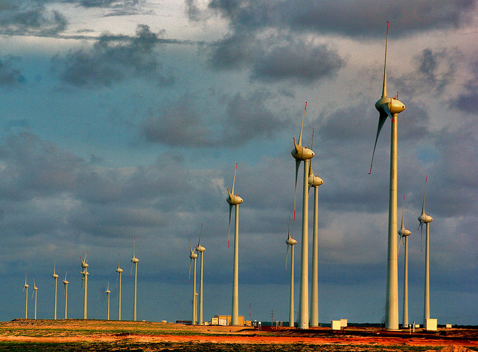

Definizione e Descrizione
L'energia eolica è l'energia del vento, cioè l'energia cinetica di una massa d'aria in movimento. Fonte di energia alternativa a quella prodotta dalla combustione dei combustibili fossili, rinnovabile e a sostegno dell'economia verde, pulita, che non produce emissioni di gas serra durante il funzionamento e richiede una superficie di terra non eccessivamente vasta, gli effetti sull'ambiente sono in genere meno problematici rispetto a quelli provenienti da altre fonti di energia, ed è possibile sfruttarla grazie ad esempio all'utilizzo di aerogeneratori che producono energia elettrica, pompe eoliche per la movimentazione di acqua, tramite mulini a vento che producono energia meccanica per macinare cereali o altri materiali o vele per il movimento di veicoli aerei o acquatici (deltaplano, barca a vela, windsurf, ecc.).
La sua storia
L’energia eolica è utilizzata da migliaia di anni per spostare le barche (velieri), ma venne sfruttata sin dall’antichità (I° sec. d.C.) con la ruota a vento. Tra il VII e il IX secolo d.C. compaiono i primi mulini a vento in Medio Oriente e in Asia centrale. In Sicilia, sin dal X secolo i mulini a vento vennero utilizzati per pompare l’acqua di mare ed estrarne il sale. Già nel medioevo la forza del vento viene utilizzata nei mulini per macinare il grano e produrre farina, mentre le pompe a vento permettevano di drenare l’acqua sui terreni più aridi. I mulini olandesi sono passati alla storia per dimensioni (erano i più grandi) e tutt’ora qualcuna di queste imponenti costruzioni con telai costituiti da grandi vele girevoli si scorgono nelle campagne dei Paesi Bassi. Nel 1881, Kelvin propone di utilizzare la forza energetica del vento come alternativa all’esaurimento del carbone: pochi anni dopo sarà uno scozzese ad inventare la prima turbina eolica, brevettata nel 1891. Solo negli anni 70 del Novecento, la NASA svilupperà una tecnologia tutt’ora sfruttata dalle pale eoliche odierne. La pala eolica è una macchina che permette di convertire l’energia cinetica del vento (ovvero una massa d’aria che si sposta) in energia meccanica. L’energia del vento non produce né emissioni dannose per la salute, né gas serra, ed è inesauribile.

I parchi eolici
Esistono due tipologie di parco eolico, differite dall’installazione delle stesse sulla terraferma o sul mare. La prima viene detta on-shore e vede prevalentemente la sua progettazione ed installazione su zone terrene all’aperto, rilievi collinari, zone montuose. Molto diffusa, racchiude impianti posizionati su località distanti circa 3 km dalla più vicina costa. Le potenze prodotte arrivano fino ai 20 MW. La seconda, chiamata off-shore, viene posta sull’area marina nei pressi di zone costiere o in alto mare. Questi parchi sono realizzati con turbine eoliche, montate su di una piattaforma galleggiante e vengono utilizzate per la dissalazione dell’acqua marina, la produzione di energia elettrica, la produzione di vettori energetici quali metanolo e idrogeno. Le turbine possono essere installate anche in siti marini ad elevata profondità, in mare aperto e ad ampio sfruttamento dei venti costieri. L’eolico off-shore è più stabile, fornisce più energia e possiede un minor impatto visivo, tuttavia i costi di realizzazione e manutenzione sono notevolmente più alti.

Energia eolica domestica
Vi sono degli impianti eolici adatti alla produzione domestica di energia elettrica, sia per case singole, sia per condomini. Esistono due tipologie principali di generatori eolici, che potremo utilizzare per l’installazione del nostro impianto eolico domestico: impianto eolico domestico ad asse verticale (può essere una soluzione per chi abita in condomini, edifici di città con tetti piani, a falda o con piccoli terrazzi) e impianto eolico domestico ad asse orizzontale. Entrambe le tipologie di generatori richiedono una velocità minima del vento di 3–5 m/s e, in caso di elevate velocità si bloccano per ragioni di sicurezza. Per questo motivo, prima di scegliere se installare un impianto eolico domestico, occorre valutare bene le condizioni meteorologiche del luogo in cui si trova l’abitazione.
Vantaggi e Svantaggi
I vantaggi portati dall'energia eolica sono diversi:
- L’eolico risulta essere particolarmente benefico ed alimenta costantemente la fornitura di energia green in tanti Paesi del mondo.
- Ad oggi, questa fonte energetica è tra le più eco-friendly in assoluto. Le turbine responsabili per la generazione di elettricità, infatti, non inquinano l’atmosfera mentre sono all’opera.
- L’energia eolica possiede un elevato potenziale. Sebbene le turbine non siano economicamente vantaggiose in qualsiasi posto, questa tecnologia può essere sfruttata facilmente su scala globale. Ciò non avviene per altri tipi di rinnovabili, quali l’energia geotermica.
- In quanto fonte di energia libera e gratuita, il vento permette di abbassare al minimo i costi di gestione. Le uniche spese, infatti, riguardano la manutenzione che, come specificato in precedenza, è minima e saltuaria.
- Le turbine non richiedono molta manutenzione e quelle di nuova generazione possono operare per anni senza alcuna necessità di sistemazione, risultando particolarmente affidabili.
- L’energia eolica può essere sfruttata in zone lontane dai centri abitati in cui la rete elettrica pubblica non può arrivare, evitando la costruzione di infrastrutture piuttosto costose per raggiungerle.
- Le strutture artificiali possono uccidere gli uccelli e l'energia eolica ha un effetto elevato su alcune specie di uccelli in via di estinzione,come le precarie popolazioni di aquila reale degli Stati Uniti. Un gruppo particolarmente vulnerabile sono i rapaci.
- Sebbene i costi si stiano abbassando sempre più, installare un impianto eolico può risultare economicamente dispendioso, sia a livello di analisi iniziali, sia per quanto riguarda il trasporto di tutta l’attrezzatura necessaria. Le piattaforme off-shore, in questo caso, sono le più costose in assoluto, data la particolarità dei mezzi necessari allo spostamento dell’impianto.
- Questo è spesso considerato lo svantaggio principale, in quanto ci riguarda direttamente. Il rumore prodotto dalle turbine eoliche, infatti, si può solitamente udire da centinaia di metri di distanza e può risultare particolarmente fastidioso e ripetitivo. Va comunque precisato che nella maggior parte dei casi si cerca di installare impianti lontani dalle zone residenziali al fine di non minare la quiete dei cittadini.
- Ad alcune persone non piace l’idea di vivere in un’area popolata da turbine eoliche in quanto queste ultime sarebbero impattanti, invasive e un ostacolo per il paesaggio. Anche se si tratta di una visione diffusa, con il passare del tempo l’opinione pubblica è diventata sempre più favorevole all’impiego di risorse energetiche rinnovabili, quali l’energia eolica.